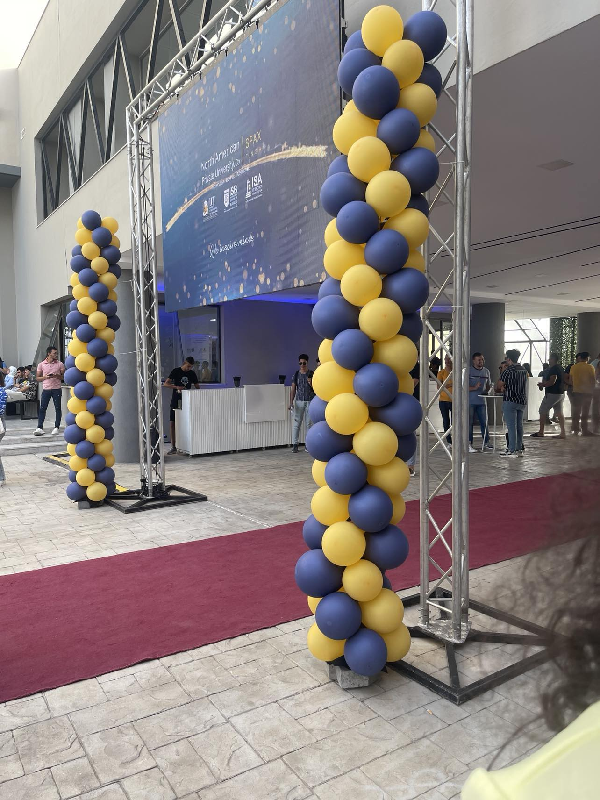

Témoignage sur l’IIT
Page Facebook IIT
Page Linkedin IIT
Notre faculté est bien plus qu'un lieu d'apprentissage ; c'est un véritable creuset de savoir, d'inspiration et d'opportunités.
Les programmes académiques rigoureux et les ressources de pointe ont façonné notre compréhension du monde, et les occasions de collaboration ont tissé des liens durables. Notre faculté est bien plus qu'une institution éducative ; c'est une source d'inspiration qui nous prépare non seulement à exceller dans nos domaines respectifs, mais aussi à embrasser le futur avec confiance.
